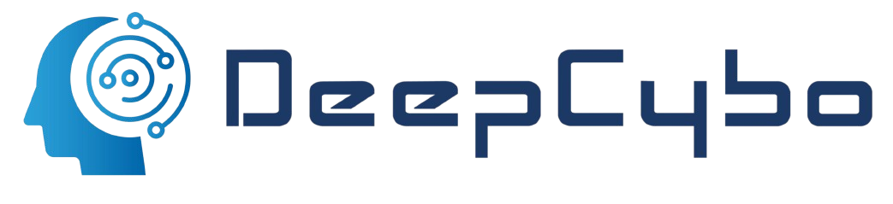
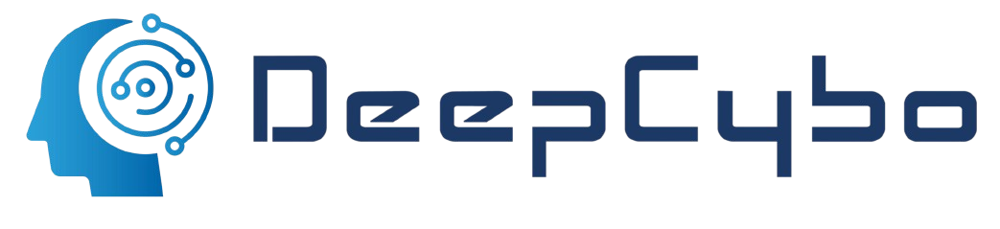

PhysBrain: Human Egocentric Data as a Bridge from Vision Language Models to Physical Intelligence
1The Hong Kong University of Science and Technology (Guangzhou)
2Zhongguancun Academy
3Zhongguancun Institute of Artificial Intelligence
4DeepCybo 5Harbin Institute of Technology 6Huazhong University of Science and Technology
4DeepCybo 5Harbin Institute of Technology 6Huazhong University of Science and Technology